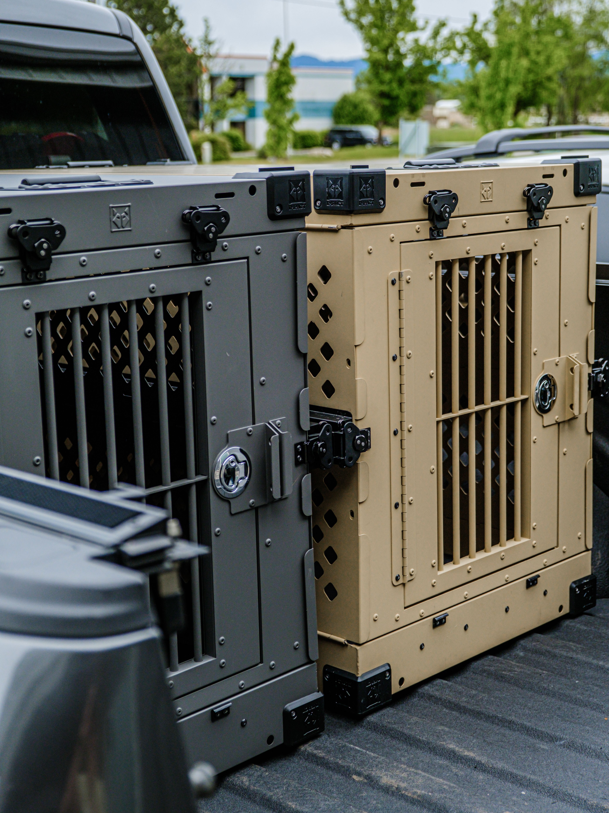

PawTrack coordinates pet transportation by air and by road, handling the paperwork, scheduling, and check-ins so shelters, transporters, and owners always know what stage a pet is at.

For long-distance moves, we coordinate flight-ready crating, airline requirements, and scheduling so pets travel safely between cities.
For shorter distances, our ground network plans routes and pickup/drop-off windows designed to keep travel time — and stress — to a minimum.
Where available, we arrange pickup at the origin address and delivery straight to the new home, minimizing handoffs along the way.
For long hauls, we coordinate cargo scheduling and connection timing between airports, with status updates at each leg.
Before a journey begins, we check vaccination records, health certificates, crate suitability, and ID — so there are no surprises at pickup.
Every booking gets a tracking number, so anyone can check status, location, and requirements from the moment it's confirmed.